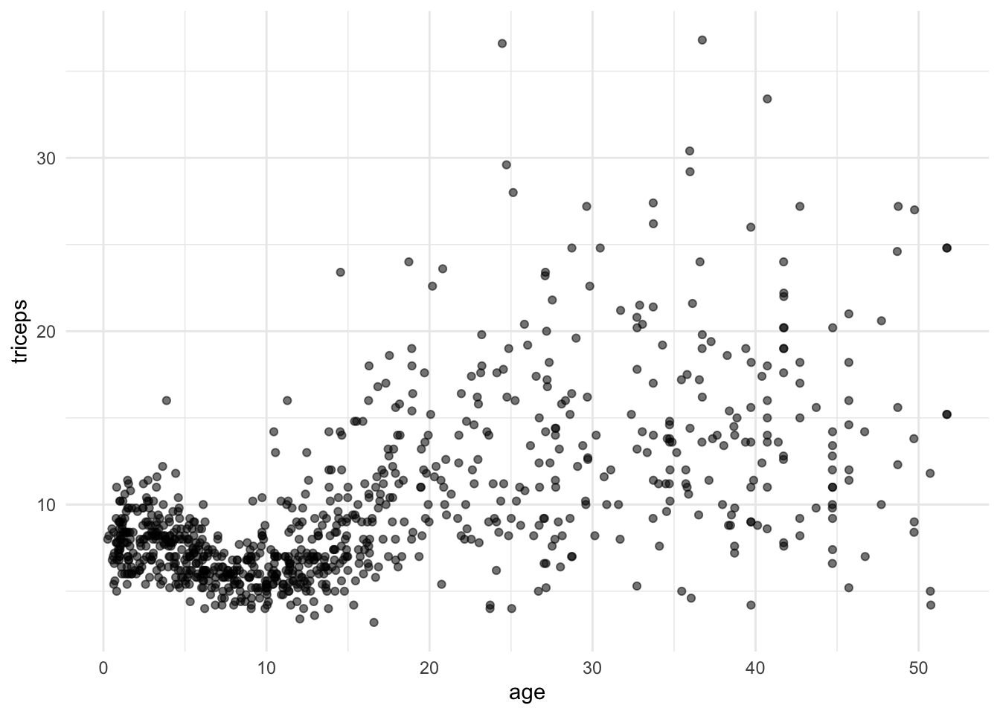
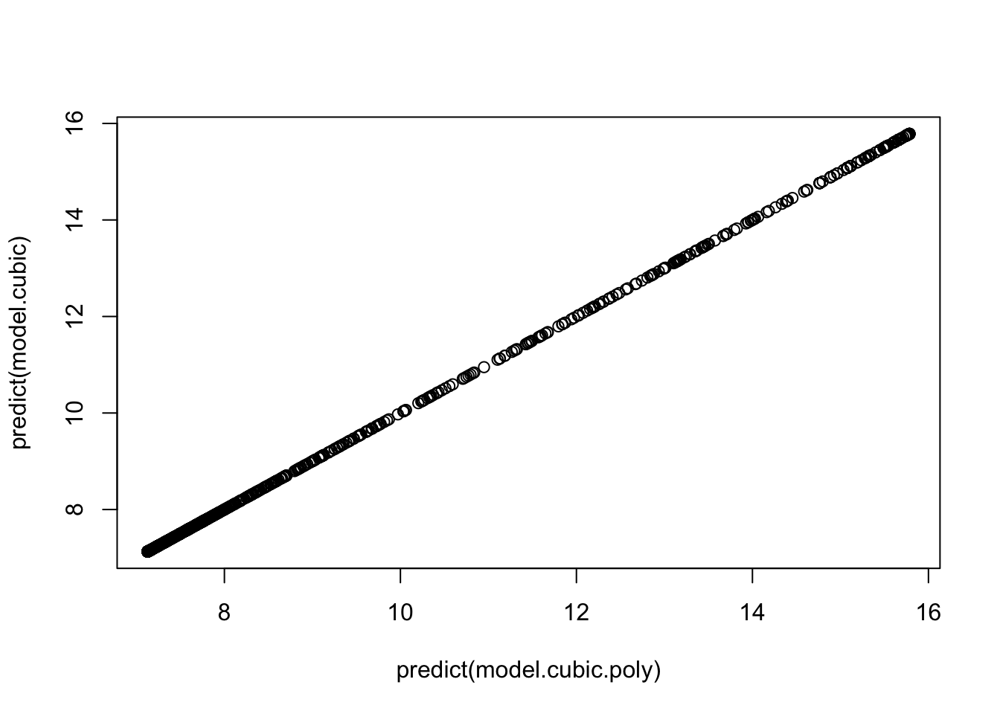
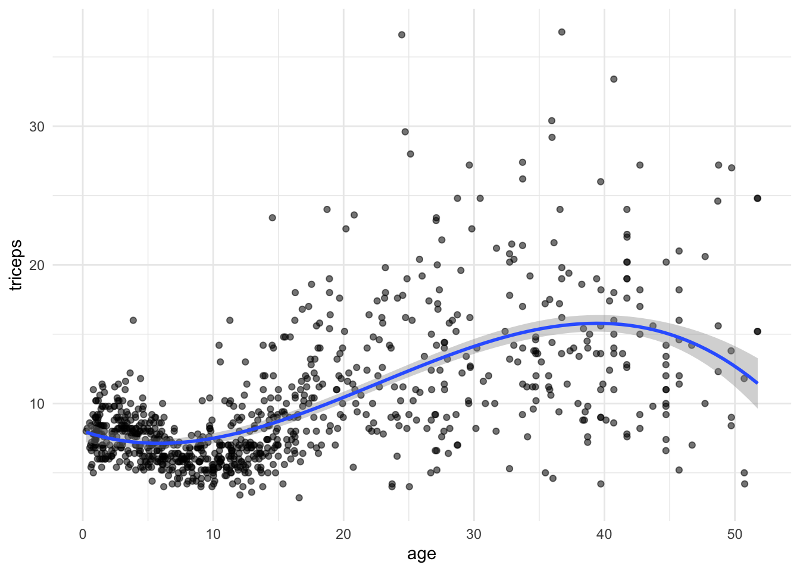
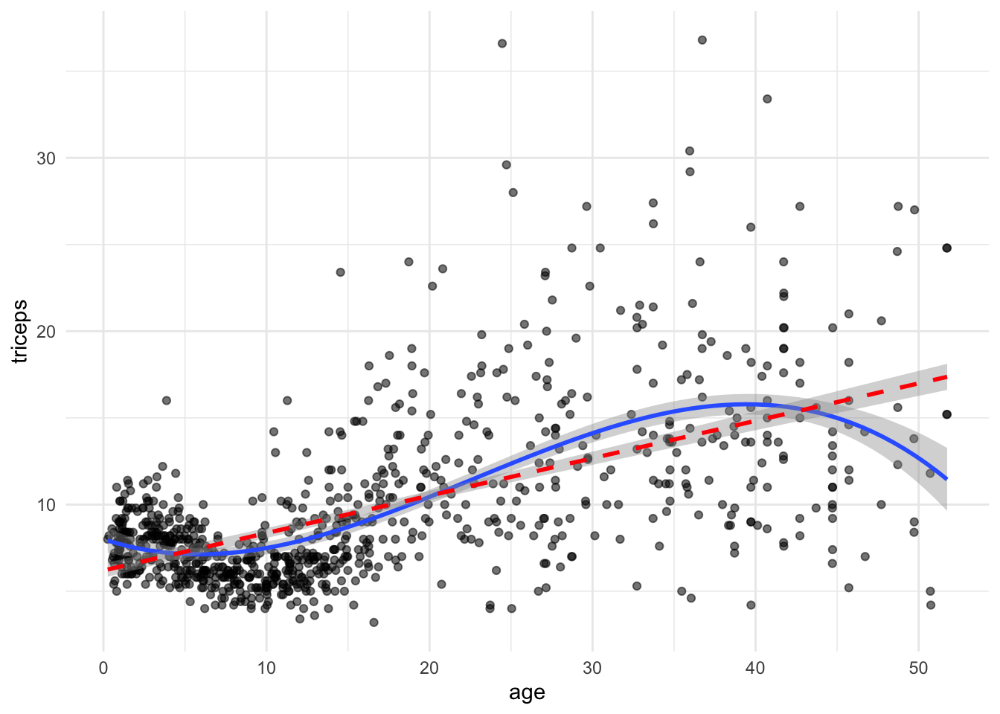

1 Polynomial Regression
1.1 Introduction
The extension of the linear models \(y=\beta_0 + \beta_1x + \varepsilon\) to include higher degree polynomial terms \(x^2\), \(x^3\), …, \(x^p\) is straightforward. Each additional term can be viewed as another predictor in the regression equation:
\(y=\beta_0 + \beta_1x + \beta_2x^2 + \dots + \beta_px^p + \varepsilon\)
This allows the fit of more flexible models representing the association between the outcome and some continuous predictors.

However, in practice, we hardly go beyond the degree 3. If the association between the outcome and predictor is highly non-linear, than it is preferable to use the methods that we will discuss in the next sections.
1.2 Readings
Read the following chapters of An introduction to statistical learning:
- 7.1 Polynomial Regression
1.3 Practice session
Task 1 - Fit a cubic model
The dataset triceps is available in the MultiKink package.
The data contains the measurement of the triceps skin fold of 892 females (variable triceps) and we want to model its association with age.
First, we will load the data
#libraries that we will need
#install.packages("MultiKink")
library(MultiKink) #for the data
library(ggplot2) #for the plots
set.seed(1974) #fix the random generator seed
data("triceps") #load the dataset triceps
#notice that the variable of interest
#it is also called triceps. Don't get
#confused!And plot the scatter for triceps and age
#simple scatter
#we can store the scatter in an object
#to use it later
tri.age.plot <- ggplot(triceps, aes(x=age, y=triceps)) +
geom_point(alpha=0.55, color="black") +
theme_minimal()
tri.age.plot
To fit a cubic model we can write all the terms using the I() function to
evaluate \(x^2\) and \(x^3\), otherwise R will not use the quadratic and cubic terms:
##
## Call:
## lm(formula = triceps ~ age + I(age^2) + I(age^3), data = triceps)
##
## Residuals:
## Min 1Q Median 3Q Max
## -11.5832 -1.9284 -0.5415 1.3283 24.4440
##
## Coefficients:
## Estimate Std. Error t value Pr(>|t|)
## (Intercept) 8.004e+00 3.831e-01 20.893 < 2e-16 ***
## age -3.157e-01 7.721e-02 -4.089 4.73e-05 ***
## I(age^2) 3.101e-02 3.964e-03 7.824 1.45e-14 ***
## I(age^3) -4.566e-04 5.612e-05 -8.135 1.38e-15 ***
## ---
## Signif. codes: 0 '***' 0.001 '**' 0.01 '*' 0.05 '.' 0.1 ' ' 1
##
## Residual standard error: 3.868 on 888 degrees of freedom
## Multiple R-squared: 0.3836, Adjusted R-squared: 0.3815
## F-statistic: 184.2 on 3 and 888 DF, p-value: < 2.2e-16Another option is to use the poly() function. Note, however, that the this
function fits a linear transformation of the terms \(x, x^2,x^3\). This is
for numerical stability given that those three terms will be highly correlated.
Thus, the regression coefficients will not be the same but the model is just
a reparameterisation of the one above and its predictions are exactly the same.
##
## Call:
## lm(formula = triceps ~ poly(age, 3), data = triceps)
##
## Residuals:
## Min 1Q Median 3Q Max
## -11.5832 -1.9284 -0.5415 1.3283 24.4440
##
## Coefficients:
## Estimate Std. Error t value Pr(>|t|)
## (Intercept) 9.7024 0.1295 74.911 < 2e-16 ***
## poly(age, 3)1 85.2594 3.8682 22.041 < 2e-16 ***
## poly(age, 3)2 -3.1638 3.8682 -0.818 0.414
## poly(age, 3)3 -31.4683 3.8682 -8.135 1.38e-15 ***
## ---
## Signif. codes: 0 '***' 0.001 '**' 0.01 '*' 0.05 '.' 0.1 ' ' 1
##
## Residual standard error: 3.868 on 888 degrees of freedom
## Multiple R-squared: 0.3836, Adjusted R-squared: 0.3815
## F-statistic: 184.2 on 3 and 888 DF, p-value: < 2.2e-16If you look at the predictions of both model, the results are exactly the same

We can also fit and plot the cubic model using ggplot. We will use the initial
scatter plot an add the fitted curve

TRY IT YOURSELF:
- Add a linear fit to the plot above
See the solution code

Task 2 - Mean Squared Error for the quadratic model
We will use the same dataset and the same variables as in TASK 1 but now we want to compute the cross-validated MSE for the quadratic model
There are multiple ways of doing this. We will take advantage of the
easy implementation of cross-validation in the caret package. We will do
10-fold cross-validations and repeat it 10 times:
library(caret)
set.seed(1234)
#repeated CV for the MSE
trC.lm <- trainControl(method = "repeatedcv",
number = 10, #10-fold cross-validation
repeats = 10) #10 times
#function to fit a polynomial model of degree x
pol.model <- train(triceps ~ poly(age,2),
data = triceps,
method = "lm",
trControl = trC.lm)
#this is the root mean squared error
pol.model$results[2] ## RMSE
## 1 3.988524TRY IT YOURSELF:
- Calculate the MSE (or the root mean squared error) for the model using a degree 4 polynomial, through cross-validation
See the solution code
set.seed(1001)
#repeated CV for the MSE
trC.lm <- trainControl(method = "repeatedcv",
number = 10, #10-fold cross-validation
repeats = 10) #10 times
#function to fit a polynomial model of degree x
pol.model <- train(triceps ~ poly(age,4),
data = triceps,
method = "lm",
trControl = trC.lm)
#this is the root mean squared error
pol.model$results[2] ## RMSE
## 1 3.782918
- Calculate the MSE (or the root mean squared error) for the models using polynomials from degree 1 (linear) up to 10
See the solution code
set.seed(1001)
#repeated CV for the MSE
trC.lm <- trainControl(method = "repeatedcv",
number = 10,
repeats = 10)
#function to fit a polynomial model of degree x
my.pol.f <- function(x) {
xx<-poly(triceps$age, x, raw=T) #design matrix with age,
#age^2, ..., age^10
new.data <- cbind(triceps=triceps$triceps, xx) #dataset with the added
#poly terms
pol.model <- train(triceps ~ ., #the . uses all the
data = new.data, #predictors
method = "lm",
trControl = trC.lm)
RMSE.cv = pol.model$results[2]
}
#RMSE
t(sapply(1:10, my.pol.f)) #applies the function
#to poly degrees 1 to 10
1.4 Exercises
Solve the following exercise:
- The dataset SA_heart.csv contains on coronary heart disease status (variable chd) and several risk factors including the cumulative tobacco comsumption tobacco.
Fit a logistic model for chd using the predictor tobacco (as a linear effect) and compute its AIC
Plot the fitted curve in a)
Fit a logistic model for chd allowing a cubic effect of the predictor tobacco and compute its AIC.
Plot the fitted curve in c)
Compute the cross-validated ROC of the models a) and c) (use the
caretpackage)
See the solution code for e)
library(caret)
set.seed(2001)
SA_heart <- read.csv("https://www.dropbox.com/s/cwkw3p91zyizcqz/SA_heart.csv?dl=1")
# caret will give an error for factors coded as 0 and 1
# because it uses the factors names to create
# names of internal variables. This way it is better
#to use an outcome variable with strings as the factor names
SA_heart$chd.f <- ifelse(SA_heart$chd ==1,
"chd",
"nochd")
#sets the control for 10-fold cross-validation, 10 times
# the classProbs = TRUE and summaryFunction = twoClassSummary
# store the information to compute the area under the ROC
trC.lm <- trainControl(method = "repeatedcv",
number = 10,
repeats = 10,
classProbs = TRUE, #necessary for
summaryFunction = twoClassSummary) #the AUC ROC
#linear effect
roc.l <- train(form = chd.f ~ tobacco,
data = SA_heart,
method = "glm",
family = "binomial",
trControl = trC.lm,
metric = "ROC")
#cubic effect
roc.c <- train(form = chd.f ~ poly(tobacco,3),
data = SA_heart,
method = "glm",
family = "binomial",
trControl = trC.lm,
metric = "ROC")
roc.l
roc.c
- Which model would you prefer?